FIO-8 fertigation board
The FIO-8 drives up to eight nutrient dosing pumps from one flow meter. Ten times a second it turns the recipe into a speed for every pump. Each pump output is electrically isolated, and the board stops dosing on its own the moment a reading or a wire looks wrong. It connects to GCU Cloud over Wi-Fi on its own, can report to an on-site GCU Manager, and is set up and run from the GCU Setup app over Bluetooth. Its RS-485 port reads and powers the water-quality probes.
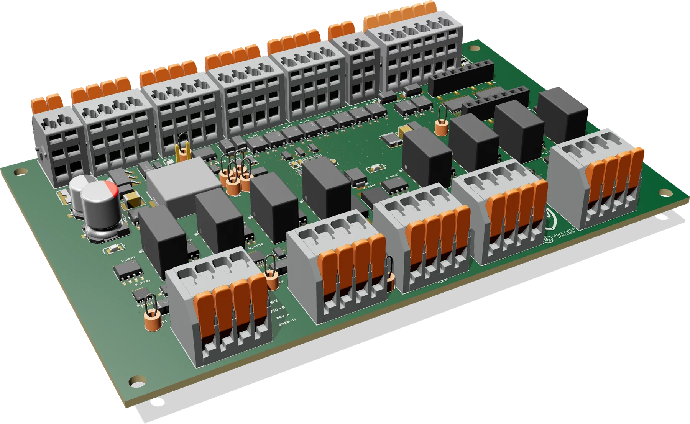
One networked board between the water line and the pumps
The FIO-8 runs a feed on its own. It counts the flow meter, sets each pump, watches every interlock and reads its own water-quality probes. The recipe, calibration and limits live on the board, so a network outage does not interrupt a feed.
It reports to GCU Cloud over Wi-Fi, and an on-site GCU Manager can supervise it over the local network. The GCU Setup app sets it up and runs it over Bluetooth, just as it does a GCU. pH and EC probes plug into the board's RS-485 port, which also powers them, so water quality and dosing land side by side in GCU Cloud. The board also switches the contactor that powers the pumps, which gives every pump a second, independent way to stop.
From flow pulses to a pump signal
Every 100 ms the board measures the water flow and works out how fast each pump must run to hold the recipe. The example below follows one pump through that calculation with a typical paddlewheel meter on 1½-inch pipe.
- Flow meter16.2 /spulses; 121.42 pulses per gallon for this meter
- Flow8.00 gpmpulses ÷ the meter's K-factor
- Nutrient needed152 ml/min8.00 gpm × recipe 19.00 ml/gal
- Pump speed30.4 %÷ this pump's 500 ml/min at full speed
- Output8.86 mA4 mA + 16 mA × 30.4 %
The board doses only while all of these hold
- Dosing is switched on, from the app, GCU Cloud or the GCU Manager.
- Water is flowing to a room. The board sees it in the flow itself, from a valve contact on input 8, or from the GCU Manager or GCU Cloud.
- Flow is above the minimum (0.20 gpm by default) and below the most the meter can honestly read (20 gpm by default).
- The feed has not run past its time limit.
- The pump-power contactor reports the state it was told to be in.
Calibrated per pump
Each pump's full-speed rate comes from a cup test. From the app, the board runs that one pump at 20 mA for 60 seconds with everything else off; you measure the volume, and that number becomes the pump's capacity. Every output is also calibrated at the factory at 4.00 mA and 20.00 mA.
If the recipe asks for more than a pump can deliver at the current flow, the board runs it at full speed, and the app and GCU Cloud show that the pump cannot keep up.
Each pump gets its own island
Every pump output has its own cell on the board: a 1 W isolated supply, a digital isolator and a precision 4–20 mA current source. Nothing in a cell connects to the board's ground or to another cell. Only the supply's transformer and the isolator cross the barrier, so pumps on different circuits cannot form ground loops, and a wiring fault on one pump stays on that pump.
- Drives at least 500 Ω at 20 mA (about 600 Ω in practice).
- Set in 0.01 mA steps from a 12-bit driver, calibrated at 4 mA and 20 mA on every channel.
- Rests at 0 mA, or at 4 mA if your pumps expect a live zero.
- Reports a loop fault per channel: cable off, pump input open, loop resistance too high, or the cell's own supply dead.
Two independent stops on every pump, and a stop button that needs no software
A pump stops when its 4–20 mA signal drops to 0 mA, and again when the contactor that feeds the pumps' power opens. The contactor is held in by a hardware watchdog. The processor has to keep sending it pulses; if the firmware stops for any reason, the outputs and the contactor drop within about a third of a second with no software involved.
An emergency-stop terminal sits in the same chain. Wire a normally closed stop button to it, or leave the factory link in place. Opening the loop (the button pressed, a wire cut, the terminal empty) breaks the watchdog's pulse path in hardware, so both stops drop exactly as if the processor had stopped, and the firmware cannot hold anything on. The board then sounds its buzzer, shows the stop on its lights and reports it.
| If this happens | The board |
|---|---|
| Someone presses the E-stop, or its wire is cut | Every output goes to 0 mA and the contactor drops within about 0.3 s, in hardware. The buzzer sounds and the stop is reported. Dosing resumes only when the loop is closed and the stop is cleared. |
| The processor hangs or restarts | The watchdog drops the contactor and every output within about 0.3 s. After a crash restart, dosing stays off until someone clears the fault. |
| 24 V power is lost | The contactor opens and the outputs go dead. When power returns, the board picks up again from its saved settings. |
| Wi-Fi or the internet drops | Keeps dosing from the saved recipe and sends what it logged when it reconnects. A site can choose to stop after a set outage instead. |
| A probe stops answering | Marks its reading stale and raises an alert. Dosing carries on. |
| A sensor cable shorts | The sensor port's own fuse trips. The flow meters and the other inputs keep their supply. |
| A pump cable comes off | Flags that channel's loop fault. |
| An output reads back wrong | Stops and flags a fault. |
| The flow meter stops while a valve is open | Doses nothing without flow, and raises an alarm after 10 s. |
| The flow meter reads impossibly high | Treats it as noise: stops and flags a fault. |
| A tank float drops | Raises an alert. |
| The contactor's contact welds shut | The outputs stay at 0 mA, and the contact feedback flags the fault. |
| The watchdog line sticks high or low | The contactor drops either way, because only pulses hold it in. |
What lands where
All field wiring lands on push-in terminal blocks along the two long edges: controls and sensors on the back edge, pumps and the contactor on the front edge. The I/O labels are printed on the enclosure.
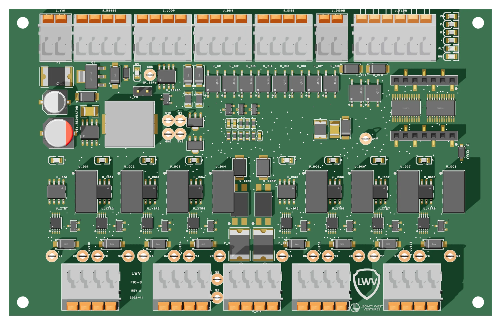
- 1Power in. Fuse, reverse-polarity guard, surge clamp and the 5 V supply for the board.
- 2RS-485 sensor port. The board is the bus master; 24 V for the probes on its own fuse. The 120 Ω termination is switched on or off from the app, not with a jumper.
- 3Input isolation. Optocouplers for the eight dry-contact inputs and the two flow meters.
- 4Processor. A plug-in Seeed XIAO ESP32-S3 with Wi-Fi and Bluetooth, in two sockets. Its antenna lead runs to the case wall.
- 5Hardware watchdog that holds the contactor and the output driver.
- 6One of the eight output cells: isolated supply, isolator and current source, with a status light above each.
- 7Pump-power and flush contacts with their fuses and contact feedback.
| Terminal | Poles | Connects to |
|---|---|---|
| 24 V IN | − + | 24 V DC supply (±10 %), about 0.3 A plus what the probes on the RS-485 port draw. |
| RS-485 | B A G +24 | pH and EC probes and other Modbus sensors, read by the board and powered from it at 24 V (0.5 A, its own fuse). One four-wire cable per sensor run. |
| 4–20 mA IN | 1+ 1− 2+ 2− | Two loop-powered sensors: line pressure, tank level, or a transmitter. |
| INPUTS 1–4, 5–8 | 1 2 3 4 | Dry contacts: tank floats, a valve-open contact (input 8), door or alarm switches. |
| IN COM | +24 +24 | The common side of the dry contacts, wetted from the board at 24 V. |
| FLOW A · B | + S G + S G | Two pulse-output flow meters, powered from the board at 24 V. |
| E-STOP | +24 RET | A normally closed emergency-stop button (or the factory wire link). An open loop stops every pump in hardware. |
| PUMP 1·2 … 7·8 | + − + − | The 4–20 mA speed inputs of the dosing pumps, two pumps per block. |
| CONTACTOR · FLUSH | K1 K1 K2 K2 | K1 switches the 24 V coil of the contactor that feeds the pumps' power. K2 switches the flush or drain valve (60 V, 2 A, AC or DC). |
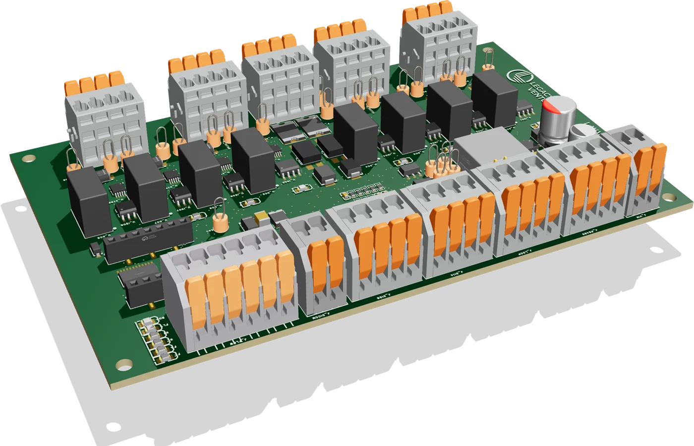
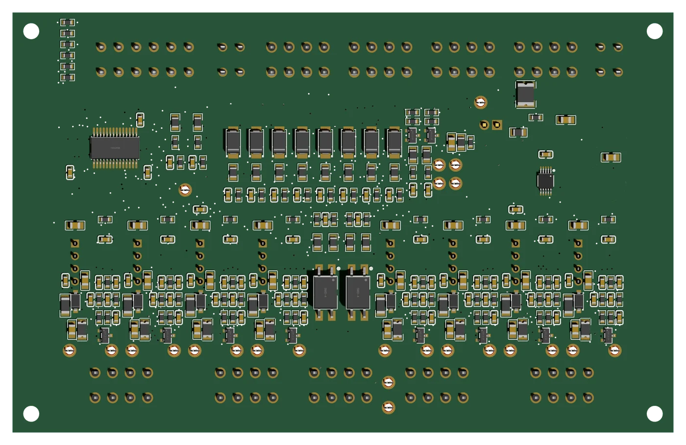
The board does the work; you see it and steer it from anywhere
What you set
- The recipe for each pump, in ml per gallon.
- Each pump's capacity from its cup test, and the flow and time limits.
- Dosing on or off, where the valve signal comes from, and the probes on the sensor port.
- From the GCU Setup app on site, from GCU Cloud anywhere, or from the GCU Manager on the site network.
What it reports
- Flow, gallons this feed and today, and ml per pump for the feed and the day.
- Every input, the contactor state and any fault, as they change.
- pH, EC and the other probe readings from its sensor port.
- In GCU Cloud: charts, per-injector daily totals and alarms for low flow, high flow, probes and board faults.
A button, a buzzer and a light for every pump
The board shows what it is doing without a phone. Each pump channel has a red/green light, a buzzer calls attention to anything that needs a person, and one button covers the jobs you do standing in front of it. A real-time clock with its own coin cell keeps every log record correctly time-stamped through a power or network outage.
| Signal | Meaning |
|---|---|
| Channel light green | That pump is dosing. Blinking: calibration or a cup test is running. |
| Channel light red | That channel has a fault, such as an open pump loop. Blinking: it needs attention, such as a calibration that is due. |
| Buzzer | E-stop opened, dosing stopped by a safety rule, a tank float low, a probe fault. Silenced from the app or with a short press of the button. |
| Button, short press | Identifies the board (the lights chase, one beep) and opens the Bluetooth pairing window for 10 minutes. |
| Button, held 3 s | Stops dosing locally until it is cleared. |
| Button, held 10 s | Resets the network settings; three beeps confirm. |
Rev B at a glance
| Power | 24 V DC ±10 %, about 0.3 A plus sensor power. Fused, reverse-polarity protected, surge clamped. |
| Pump outputs | 8 × 4–20 mA, each in its own isolated cell. At least 500 Ω at 20 mA. 0.01 mA steps. Rest at 0 or 4 mA. Loop-fault flag per channel. |
| Flow inputs | 2 pulse inputs with 24 V sensor supply, optocoupled, counted in hardware above 1 kHz. |
| Sensor inputs | 2 × 4–20 mA, loop powered, 0.1 % precision shunt, 16-bit converter. |
| Contact inputs | 8 dry contacts, 24 V wetting, optocoupled. |
| Contacts out | 2 solid-state contacts, 60 V, 2 A, AC or DC, each fused, with contact feedback. K1 is held by the hardware watchdog. |
| Network | Wi-Fi to GCU Cloud and the GCU Manager; Bluetooth LE for the GCU Setup app. Firmware updates over Wi-Fi. |
| Sensor port | RS-485, Modbus RTU master, 24 V sensor supply on its own 0.5 A fuse, 120 Ω termination switched from the app. |
| Emergency stop | Terminal for a normally closed stop loop, optocoupled; opening it drops every output and the contactor in hardware. |
| On the board | A push button, a buzzer, a red/green light per pump channel and six status lights. |
| Clock | Real-time clock with a coin-cell backup (CR1220), set from the network or the phone. |
| Processor | Plug-in Seeed XIAO ESP32-S3 (Wi-Fi, Bluetooth LE), antenna lead to the case wall. |
| Board | 132 × 84 mm, 4 layers, four M3 mounting holes, 26 test points. |
| Terminals | Push-in terminal blocks, 3.5 mm pitch. |
| Enclosure | Black DIN-rail case with a clear cover; the I/O labels go on as stickers. |
FIO-WQ: pH and EC measured on the board, in the water line
The FIO-WQ reads two pH electrodes and two conductivity cells, each with its own temperature probe, and hands the readings to the FIO-8 over one four-wire cable. Each of the four measurement circuits is electrically isolated from the others and from the bus, so probes in the same water do not disturb each other and a wiring fault on one stays on one. It checks its own electrodes before it trusts them. The board itself stays dry on the DIN rail: the pH electrodes and conductivity cells sit in the water line, in a tee or a flow cell, and their cables run back to the jacks and terminals.
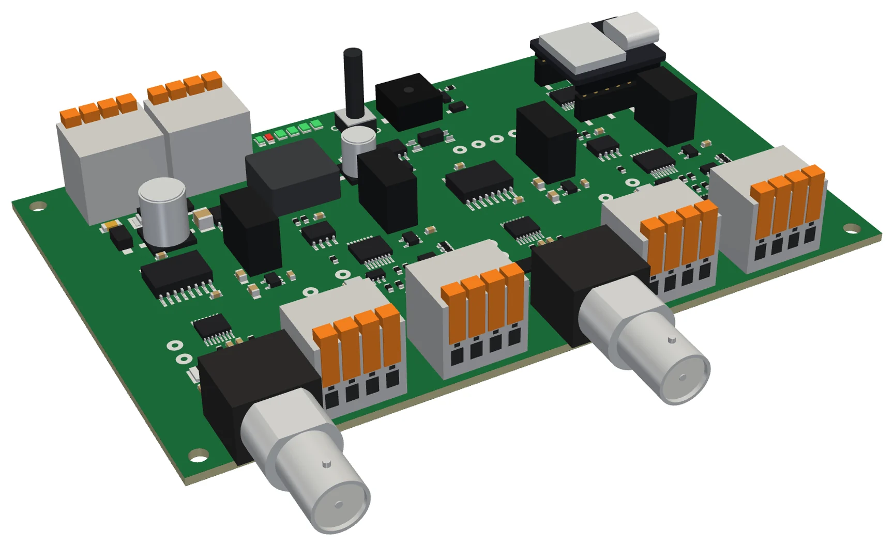
pH, the way a lab meter does it
A glass electrode is a very high-impedance source, so each pH channel starts with an electrometer-grade buffer right behind the BNC jack and a 24-bit converter that also reads the channel's PT1000. The reference side of the electrode is the channel's own ground, not the board's. Before a reading is trusted the board can switch a 1 GΩ test resistor onto the glass: a healthy electrode and a cracked or aged one answer differently, and that answer goes to GCU Cloud with the reading.
EC with a built-in check
Each conductivity channel drives its cell with a small AC signal and measures the complex impedance, with the cell's PT1000 for temperature compensation. Three precision resistors (100 Ω, 1 kΩ and 10 kΩ) and a check resistor sit on the board behind the same switch as the cell, so the channel measures a known value before every reading and reports if it drifts. The two channels are meant for source water in and mixed water out, so a recipe can be set in EC above the source and a pump that stops delivering shows up as a mix EC that does not rise.
| Terminal | Poles | Connects to |
|---|---|---|
| pH 1 · pH 2 | BNC | A standard combination pH electrode: glass on the centre pin, reference on the shell. The shell is that channel's own reference, never the chassis. |
| pH 1 · pH 2 probe block | RTD+ RTD− SG GND | The channel's PT1000 and a solution-ground pin for electrodes that have one. |
| EC 1 · EC 2 | E1 E2 T+ T− | A two-electrode conductivity cell and its PT1000. |
| BUS IN | B A GND 24V | One four-wire cable from the FIO-8's RS-485 port: data and 24 V. |
| BUS OUT | B A GND 24V | The same four wires, passed through to the next sensor on the run. |
| Status lights | BUS FLT PH1 PH2 EC1 EC2 | Bus traffic, a board fault, and one light per channel; a USB-C service port sits beside them. |
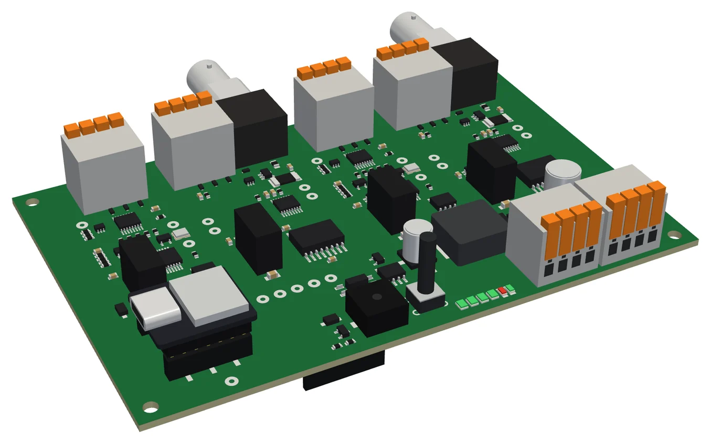
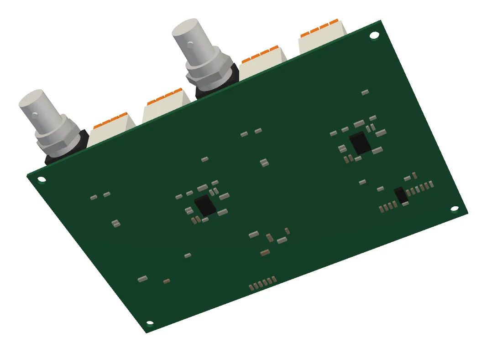
| pH channels | 2, on BNC. Electrometer buffer, 24-bit converter, PT1000 compensation, 1 GΩ glass-impedance test, each in its own isolated circuit. |
| EC channels | 2, for two-electrode cells. AC impedance measurement, on-board 100 Ω / 1 kΩ / 10 kΩ calibration and check resistors, PT1000 compensation, each in its own isolated circuit. |
| Isolation | Four 1 W isolated supplies and four digital isolators; the electrodes and the bus share no ground. |
| Bus | RS-485 Modbus RTU on the FIO-8's sensor port, at its own address, with the bus passed through to further sensors. Readings and probe health appear in GCU Cloud next to the FIO-8's dosing. |
| Power | 24 V from the FIO-8's sensor port, under 1 W typical. Fused and reverse-polarity protected. |
| Processor | Plug-in Seeed XIAO module in two sockets; USB-C for service. |
| On the board | A push button, a buzzer, a red/green light per measurement channel, bus and fault lights, and a real-time clock with a coin-cell backup. The RS-485 termination is switched from the app (off by default: the FIO-WQ usually sits mid-bus). |
| Board | 132 × 84 mm, 4 layers, 261 parts, the FIO-8's four M3 mounting holes and case family. |
Printed DIN-rail cases
Both boards share one case family: a black base tray printed in ASA with rounded corners, and a flat 3 mm clear polycarbonate cover, so the board and its lights show through. The case clips to 35 mm DIN rail. The walls open in front of both terminal rows, from the board up, so wires go straight into the push-in blocks and the levers flip outward with the cover on. The button is pressed through the cover by a printed plunger, the buzzer sounds through a small port above it, and the clock's coin cell is changed through a hatch in the floor. The I/O labels go on as stickers.
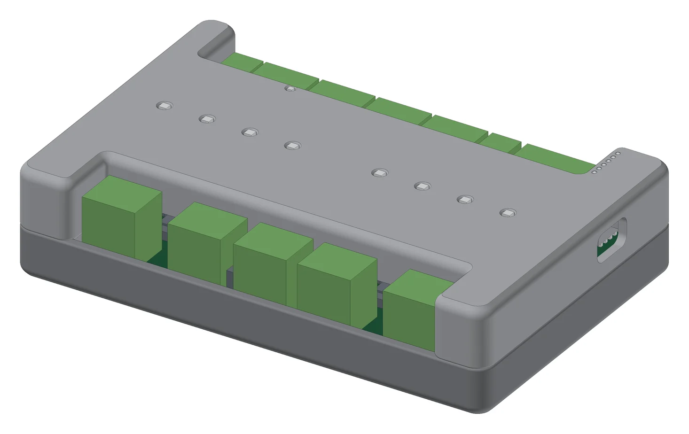
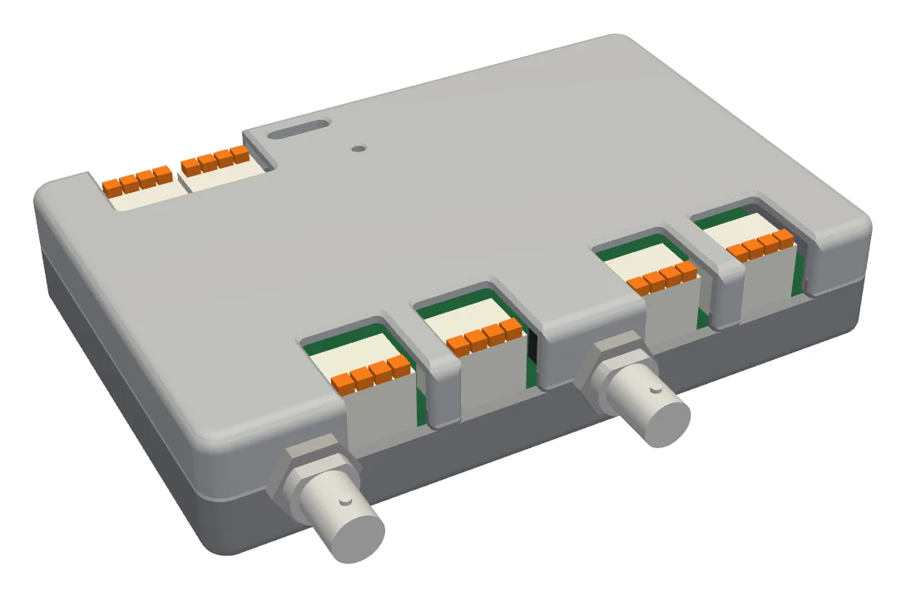
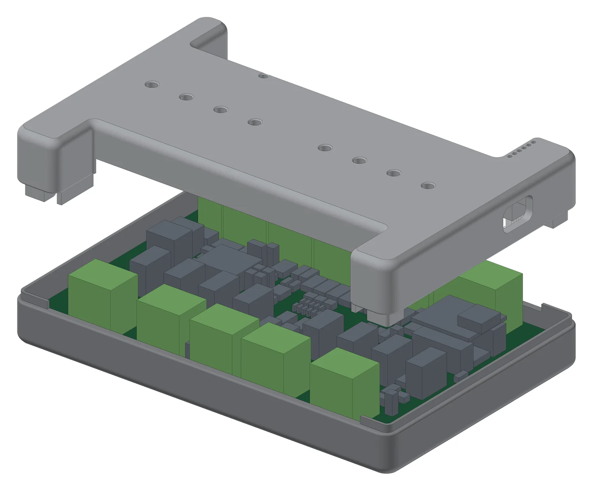
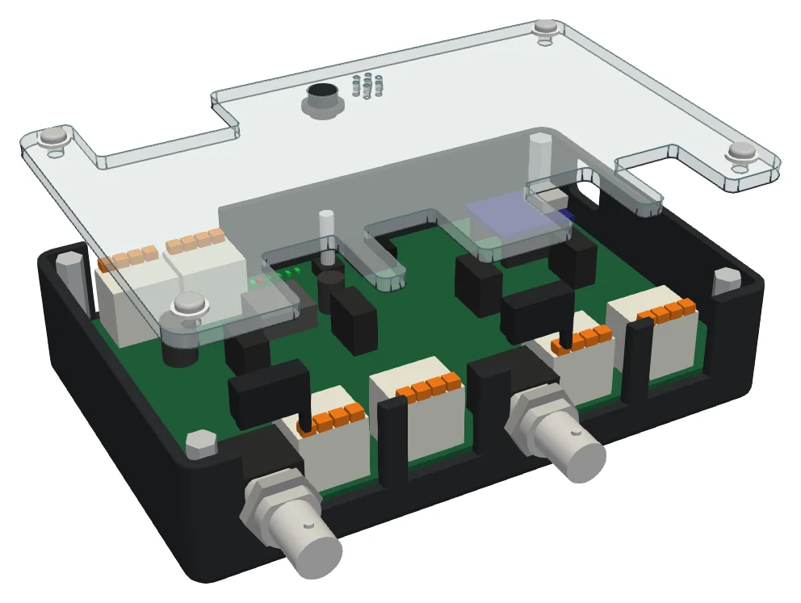
| Material | Black ASA base tray, printed without supports; flat 3 mm clear polycarbonate cover, cut to shape. Labels as stickers. |
| Mounting | 35 mm DIN rail clip under the base. The board is held by four M3 screws through its own mounting holes. |
| FIO-8 case | 138 × 90 × 33 mm, 8 DIN modules. The lights show through the cover; button plunger and buzzer port in the cover; coin-cell hatch in the floor; USB-C through the end wall. |
| FIO-WQ case | 138 × 91 × 33 mm, 8 DIN modules. BNC jacks through the front wall, held by their own panel nuts; button plunger and buzzer port in the cover; coin-cell hatch in the floor. |
| Wiring | The walls open in front of the terminal rows; levers reachable with the cover on. |